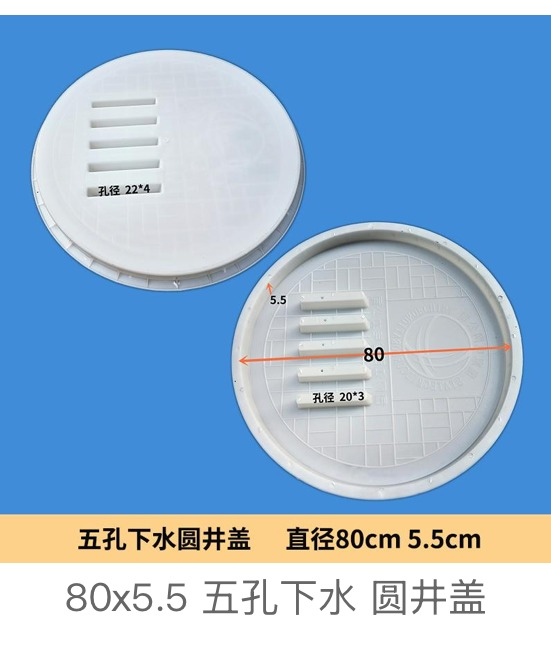
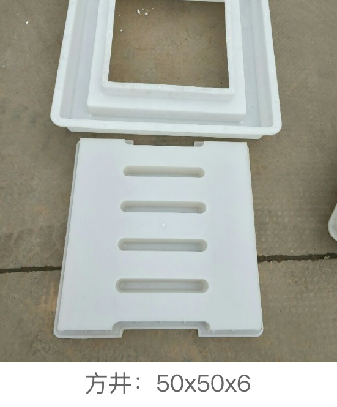
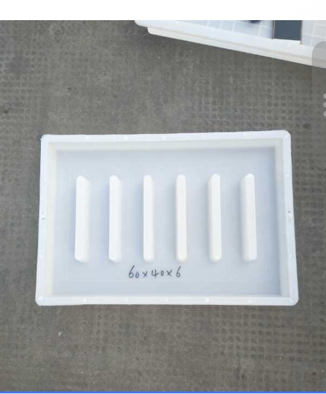
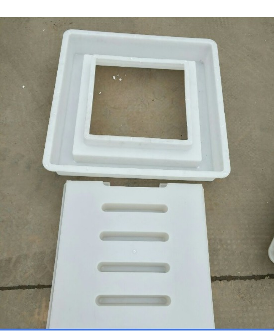
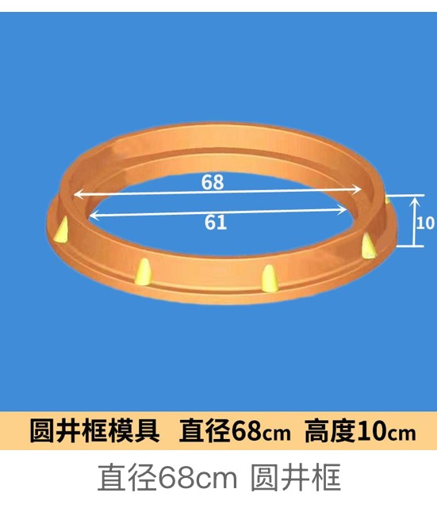

Municipal & Utility Mould Category
Plastic moulds for precast concrete manhole covers and well frames: square 50 × 50 × 6 cm, rectangular 60 × 40 × 6 cm, a round five-hole sewer cover Ø 80 × 5.5 cm, a cover-plus-frame set and a Ø 68 cm round well frame. Every dimension below is read off the mould photo, not estimated.

Manhole and inspection-well moulds are a stable infrastructure product line for municipal drainage networks, sewer systems, road projects, sidewalks, residential communities, industrial parks and utility access points.
Zhihua supplies plastic moulds for square and rectangular manhole covers, round sewer covers with cast-in drainage holes, and round well frames that seat the cover. If you also need to build the chamber walls below the cover, see our shaft ring brick and well wall brick moulds. Standard catalogue items and OEM designs from drawings, markings or sample photos are both available.
Five verified cover and frame moulds with real finished dimensions read off our own workshop photos. Modular shaft and wall bricks for building the chamber below the cover are on the shaft & wall brick mould page.

Square well cover · 50 × 50 × 6 cm finished slab

Rectangular well cover · 60 × 40 × 6 cm finished slab

Two-part set · slotted cover plate + matching frame
Round sewer cover · Ø 80 cm × 5.5 cm · 5 drainage holes (Ø22×4 + Ø20×3)

Circular well frame / collar · Ø 68 cm outer × 10 cm high · Ø 61 cm clear opening
Cover moulds are quoted on finished slab size, not on the mould's outer size. Read this before sending an enquiry.
This is the single most common source of re-quoting. A cover slab cast on its own will not sit flush unless the surrounding frame was cast from a matching mould with the correct seat clearance.
We do not publish load classes for this category. Load class is a property of your finished concrete mix and reinforcement, not of the plastic mould, and quoting one would be misleading.
| Product on this page | Finished dimensions | Typical use |
|---|---|---|
| Square manhole cover mould | 50 × 50 × 6 cm | Sidewalk, community and light utility access |
| Rectangular manhole cover mould | 60 × 40 × 6 cm | Valve chambers, meter boxes, rectangular access pits |
| Square cover + slotted frame set | Cover plate + matching frame | Where cover and frame must be cast to fit each other |
| Round five-hole sewer cover mould | Ø 80 × 5.5 cm, holes Ø 22 × 4 / Ø 20 × 3 | Sewer and stormwater access with surface inflow |
| Round well frame mould | Ø 68 cm outer × 10 cm, Ø 61 cm opening | Collar / seating ring on top of a circular shaft |
Cover projects usually hinge on a local drainage standard and a marking requirement. A photo of the cover you need plus the finished slab dimensions is normally enough for us to quote.
Send your local cover/well drawing, size or sample photo. We can review catalogue options or OEM mould feasibility.
Send InquiryWhatsApp NowTelegram NowOnly if you are casting the frame in concrete too. If your site already has steel frames or existing concrete seats, the cover mould alone is enough — but send the seat opening size so the cover is dimensioned to drop into it. Where both parts are cast, order them as a matched set so the seat clearance is designed in.
We do not quote a load class, because it is not a property of the plastic mould. Load capacity comes from your concrete mix, reinforcement and slab thickness. The 6 cm and 5.5 cm covers here are typical pedestrian and light-utility sections; for trafficked covers, design your own reinforcement and tell us the finished thickness you need.
Yes. Logo, lettering, utility name and anti-slip surface patterns can be tooled into the cover from drawings or clear sample photos. Markings are fixed before the mould is cut, so send the artwork with the enquiry.
Always quote the finished slab size you need the cured concrete cover to be — diameter, or length × width, then thickness. The dimensions on this page (such as 50 × 50 × 6 cm and Ø 80 × 5.5 cm) are finished cover dimensions, not the mould's outer dimensions. We size the mould around your finished slab, including the small draft allowance for demoulding.
Yes. For an existing steel or concrete frame, measure the clear seat opening and the cover thickness it accepts, and send a photo or drawing. We dimension the cover to drop into that seat with the correct clearance. If you also need to cast the frame, order the cover and frame as a matched set so the seat is designed together.